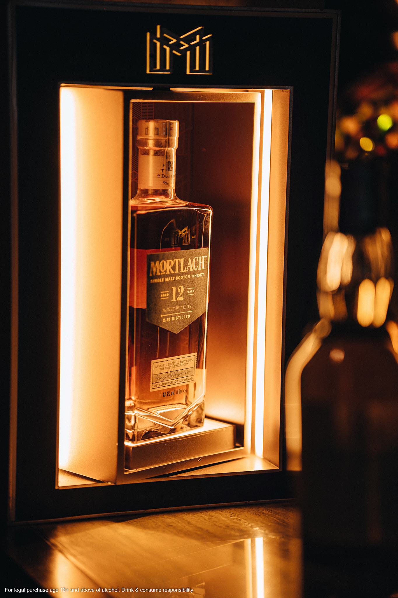

Từ khi nào ông nhận ra tình yêu của mình đối với whisky?
Loại whisky đầu tiên mà tôi thử là Lagavulin, và đó thật sự là một khởi đầu khá “hoành tráng”. Tôi cảm nhận rất rõ và nhớ đến tận bây giờ là vị rất đậm đà. Nguyên do là vì thuở bé tôi thường đến thăm ông bà trên vùng đảo Islay. Một ngày nọ, nhân sinh nhật của ba, ông đưa tôi một ly Lagavulin và tôi bị chinh phục ngay lập tức. Tôi đoán là vì tôi có cơ hội thưởng thức gần nơi loại rượu này được sản xuất. Vô hình trung, tôi cảm nhận được một sợi dây kết nối sâu sắc nào đó giữa mình với whisky. Kể từ đó, tôi muốn tìm hiểu thêm những hương vị tuyệt hảo như Lagavulin cũng như mọi loại whisky khác trên đời. Đó là một kỷ niệm rất khó quên trong đời. Bạn có thể hình dung thế này, khoảnh khắc đó rất đặc biệt đối với cá nhân tôi.
Tôi xin mạnh dạn nhận xét là ông đang được làm một “công việc trong mơ”, bởi ông có cơ hội được nếm thử rất nhiều loại whisky xuất chúng trên thế giới. Ông có thể hé lộ đâu là cái tên mê hoặc ông nhiều nhất không?
Chà, một câu hỏi rất khó (cười). Tôi đã được dịp nếm thử rất nhiều loại whisky thượng thặng, và một trong số đó là Talisker 44 Y.O (năm tuổi) vì hương vị mạnh mẽ và đậm mà nó mang lại. Tôi cũng rất thích Mortlach 20 Y.O, một trong những loại whisky cao cấp nhất trong danh mục. Đối với tôi, nó hội tụ đầy đủ đặc tính thường thấy của “Mãnh thú vùng Dufftown”: tinh tế, thanh lịch, là kết tinh tuyệt vời của những dòng whisky tinh chế. Đối với tôi, nó thể hiện rất tốt phẩm vị đậm, gắt, nhưng cũng đồng thời vô cùng thanh tao.
Có rất nhiều người yêu whisky, người am hiểu và có chuyên môn sâu về whisky cũng không thiếu. Vậy theo ông, vì sao ông lại được chọn làm đại sứ thương hiệu của Diageo?
Chà, tôi không chuẩn bị trước tinh thần cho câu hỏi này (cười). Nhưng tôi nghĩ là do tôi có kiến thức tổng quan về cả ngành công nghiệp, tôi đã học cách làm ra whisky, tôi dành nhiều thời gian ở các xưởng chưng cất whisky, tôi làm việc liên quan đến thương mại và tìm hiểu về những thị trường khác nhau trên thế giới, tôi cũng làm các vai trò liên quan đến marketing và PR, bên cạnh các công việc về quản trị và đào tạo nhân viên. Bởi vì biết mỗi thứ một chút nên tôi có thể kết nối chúng thành một bức tranh tổng thể về tất cả những gì chúng tôi làm, thay vì chỉ là những công đoạn riêng lẻ. Tôi nghĩ là điều đó rất hữu dụng.

“Với Mortlach, chúng tôi thực hiện một
quy trình chưng cất đặc biệt mà không
nơi nào có.”
Chúng ta hãy trở lại với một trong những cái tên mà ông yêu thích nhất, Mortlach. Giới am tường whisky thường nói về Mortlach như một loại whisky “bold flavour without big smoke” tạm dịch là hương vị mạnh mẽ nhưng không khói. Liệu có bí quyết gì đằng sau hương vị đặc biệt này không?
Câu hỏi tuyệt vời quá! Đương nhiên là có bí mật cả. Chúng ta vẫn thường xuyên nói về độ mạnh của một loại whisky trước khi bước vào lãnh địa của hương khói. Tôi nghĩ hai điều này khá tách biệt với nhau. Điều cốt yếu mà chúng tôi muốn đạt được chính là hương vị, thông qua một quá trình chưng cất. Với Mortlach, chúng tôi thực hiện một quy trình chưng cất đặc biệt mà không nơi nào có.
Thông thường, với whisky, chúng ta sẽ chưng cất 2 lần, hoặc 3 lần. Ở Mortlach, chúng tôi chưng cất 2.81 lần. Nghe có vẻ phức tạp đúng không, vì đúng là nó phức tạp thật (cười). Có thể hình dung như sau, tại nhà chưng cất của Mortlach, chúng tôi có 6 hệ thống chưng cất bằng đồng với kích cỡ và hình dạng khác nhau, điều cũng khá bất thường so với các nhà chưng cất khác. Chúng tôi thực hiện những quy trình khác nhau khi đưa whisky chạy qua toàn bộ 6 tĩnh đồng. Tiếp đến, chúng tôi chưng cất 2 lần một phần whisky, và chưng cất 3 lần phần whisky còn lại, sau đó trộn chúng lại với nhau. Và đó là cách chúng tôi khiến Mortlach “trưởng thành”, công phu và đòi hỏi chúng tôi phải mất nhiều thời gian để thật sự hiểu quy trình này có nghĩa là gì. Cách đây nhiều năm, có một nhà chưng cất bậc thầy đã cố gắng đào sâu quy trình này và tính toán cẩn thận, để xem chính xác là chúng tôi đã chưng cất Mortlach bao nhiêu lần. Kết quả ra được là 2.81 lần - một con số đại diện cho “bí thuật” vì không ai làm điều đó cả. Nhưng kết quả thì thật là mỹ mãn – chúng ta có một phức hợp quyện hòa với nhau, với tầng tầng lớp lớp hương vị.
Chà, vậy có nghĩa là con số 2.81 lần đến sau quy trình này, chứ nó không xuất hiện ngay từ đầu?
Đúng vậy. Lúc đó, bậc thầy chưng cất là Alexander Cowie đã kết hợp với một kiến trúc sư nổi tiếng lúc bấy giờ là Charles C. Doig thiết kế nên 6 hệ thống chương cất bằng tĩnh đồng với hình dạng khác nhau. Họ là người đã tạo nên chúng, thử nghiệm, và cho quy trình này đi vào hoạt động, chứ không tính toán chính xác xem số lần chưng cất là bao nhiêu. Chỉ mới gần đây thôi, chúng tôi mới quay trở lại khám phá quy trình đó, và đưa ra con số cụ thể và chính thức là 2.81 lần.

“Bạn phải học, và hiểu
whisky trước, rồi mới có thể
hiểu được Mortlach.”
Tôi cũng từng được nghe về “những tĩnh đồng ngân nga” (singing stills) rất nổi tiếng đến từ nhà chưng cất Mortlach. Ông có thể giải thích thêm về điều này được không?
Tất nhiên rồi, đây chính là một trong những điều độc nhất chỉ có tại Mortlach. Trong suốt quá trình chưng cất, những tĩnh đồng của Mortlach sẽ phát ra những tiếng ồn vui tai như thể chúng đang “hát” vậy. Đó là tiếng động của những dòng whisky Mortlach chạy bên trong tĩnh đồng, chúng cộng hưởng với thành đồng của tĩnh và những luồng hơi nước bốc lên để tạo nên một phức âm kỳ lạ, nghe như tiếng ngân nga rất êm dịu. Tôi chưa từng nghe được âm thanh nào như vậy ở bất cứ nhà chưng cất nào khác. Một lần nữa, đó lại là một thứ gì đó rất nhiệm màu ở nhà chưng cất Mortlach mà chúng tôi không thể hiểu tường tận tại sao lại xảy ra. Tôi không nghĩ là nó có ảnh hưởng gì tới hương vị của whisky hay không, nhưng nó rõ ràng là một câu chuyện thú vị đã làm nên một “tuyệt giác giấu kín”, khai mở những tinh hoa, đưa giới mộ điệu vào thế giới của Mortlach.
Ông vừa nói rằng công thức tạo nên Mortlach chỉ được chia sẻ giữa những bậc thầy pha chế thực thụ trên thế giới. Vậy chính xác thì có bao nhiêu người biết được bí mật này, và làm sao Mortlach có thể đảm bảo là bí mật này sẽ không bị mất đi?
Có rất ít, bởi vì quy trình chưng cất nên Mortlach quá phức tạp, đòi hỏi phải có một quãng thời gian dài học hỏi mới có thể hiểu được. Chúng tôi gọi nó là “The Way”, (Con Đường), và để đi trên con đường đó, chỉ có một số ít người có đủ khả năng mới có thể thực hiện, để rồi sau này truyền lại cho con cháu của họ.